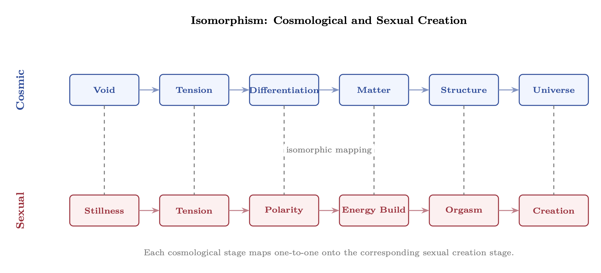
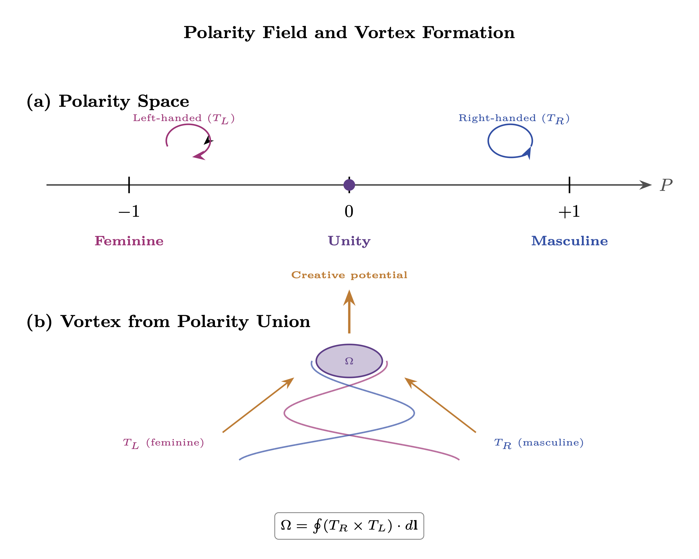

Chapter 7: Eros and Creation
Sexual Polarity as the Foundation of Manifestation
KEY FINDINGS — Chapter 7: Eros and Creation
Evidence-tier key: [L1] established/replicated evidence; [L2] grounded extension with moderate uncertainty; [L3] speculative hypothesis; [L4] conceptual/anecdotal.
- [L1-HIGH]The polarity vector \(P = (T_R - T_L)/(T_R + T_L)\) is a standard normalized ratio; the coupled oscillator energy exchange equations and RC charging curve for arousal are correct RF mathematics.
- [L2-MEDIUM]Piezoelectric coupling in collagen/fascia (Fukada & Yasuda 1957) provides a plausible physical mechanism for wave coupling during physical contact, independent of the torsion field model.
- [L2-MEDIUM]Epigenetic evidence (Dias & Ressler 2014) supports the claim that parental states at conception leave molecular marks affecting offspring gene expression.
- [L3-SPECULATIVE]The dimensional bridging model — sexual union creating a vortex that bridges density boundaries — is a metaphysical framework with no direct empirical test currently available.
- [L3-SPECULATIVE]The manifestation window at orgasm (\(P_{manifest} = P_{source} \cdot \sigma _{peak}^2 \cdot |AF|^2 \cdot (1-|\Gamma |^2)\)) translates traditional Tantric/magical claims into RF mathematics but lacks empirical calibration.
_________________________________
7.1 Introduction: The Erotic Cosmos
7.1.1 Creation as Cosmic Sexuality
Every creation is an act of polarity union. From the quantum foam to galactic formation to human conception, the universe operates through the dynamic tension and resolution of complementary forces. This chapter establishes sexuality as the fundamental mechanism of creation through the framework of torsion field polarity dynamics.
The thesis: What we experience as sexual energy is the 3D expression of a universal creative principle—the interaction between right-handed (masculine, \(T_R\)) and left-handed (feminine, \(T_L\)) torsion field chiralities. Sexual union between polarized beings creates a vortex that briefly bridges dimensional boundaries, enabling direct channel to Source power.
7.1.2 Cosmological Symmetry Breaking as Polarity Dynamics
The cosmological moment of creation follows the pattern:
|
Phase | Cosmological | Sexual |
|
Pre-creation | Unified potential (Source) | Building tension/arousal |
|
Symmetry breaking | \(T_R\)/\(T_L\) chirality separation | Polarity differentiation |
|
Explosive release | Big Bang expansion | Orgasmic release |
|
Structure formation | Matter/antimatter, galaxies | New life, manifestation |
|
Ongoing dynamics | Cosmic expansion | Post-orgasmic integration |
The universe is not merely like a sexual act—it is the primordial sexual act, still unfolding. Every subsequent creation recapitulates this original pattern at smaller scales.

7.1.3 Why This Chapter Matters
This chapter bridges:
- Individual dynamics (Chapters 5-6): How your RLC circuit and DNA antenna interface with polarity fields
- Collective dynamics (Chapters 8-10): How polarity interactions scale to group and species-level effects
- Control mechanisms (Chapters 12-13): Why sexual energy is specifically targeted for corruption and harvesting
Understanding the creative power of sexual polarity explains both the extraordinary potential of conscious sexuality and the intensity of its suppression/distortion.
_________________________________
7.2 Polarity as Torsion Field Chirality
7.2.1 Torsion Field Handedness
From Chapter 0, torsion fields possess chirality—a left-handed (\(T_L\)) or right-handed (\(T_R\)) spiral orientation. These two polarities are the fundamental creative poles:
| Property | Right-Handed (\(T_R\)) | Left-Handed (\(T_L\)) |
| Traditional label | Masculine | Feminine |
| Action tendency | Projective, outward | Receptive, inward |
| Spin orientation | Clockwise (observer POV) | Counter-clockwise |
| Energy flow | Emission, broadcasting | Absorption, receiving |
| Temporal tendency | Future-oriented | Past-integrating |
| Geometric association | Straight lines, angles | Curves, spirals |
The mapping of clockwise rotation to masculine and counterclockwise to feminine is not arbitrary—it follows from established physics conventions and cross-cultural pattern recognition. In electromagnetism, the right-hand rule governs the relationship between rotation and propagation: a clockwise-rotating field (from the observer’s perspective) corresponds to forward, outward propagation. This aligns naturally with the projective, outward-directed nature of the masculine pole.
The RF engineering convention reinforces this: right-hand circular polarization (RHCP) is designated the “positive” helicity and is the standard reference orientation in antenna theory and satellite communications.
The significance of chirality extends into biology, where molecular handedness creates profound functional differences. D-amino acids and L-amino acids are mirror images with entirely different biological roles—demonstrating that the direction of spiral matters, not merely the fact of spiraling.
Multiple independent traditions have converged on the same directional mapping: Hindu Tantra associates the right-hand path (dakshina marga) with projective/solar qualities, Chinese medicine maps clockwise qi circulation to yang, and Western alchemical traditions associate rightward rotation with the sol principle. This cross-cultural consistency suggests the mapping reflects something structural rather than culturally contingent.
Epistemic Note: This is a mapping convention grounded in physics analogies and cross-traditional pattern recognition, not a claim about inherent superiority of either chirality. Just as RHCP and LHCP are equally valid polarization states in RF engineering, both torsion chiralities are equally necessary for creation. The assignment of labels follows from convention, not hierarchy.
7.2.2 The Polarity Vector
The polarity vector P quantifies the balance between masculine and feminine torsion components: \[ P = \frac {T_R - T_L}{T_R + T_L} \]
| P Value | Interpretation |
| P = +1 | Pure masculine (\(T_L\) = 0) |
| P = -1 | Pure feminine (\(T_R\) = 0) |
| P = 0 | Perfect balance (\(T_R\) = \(T_L\)) |
| P > 0 | Masculine-dominant |
| P < 0 | Feminine-dominant |
Every entity has a polarity vector. Biological sex correlates with P but doesn’t determine it—a biological male may have P < 0 (feminine-dominant polarity), and vice versa. The polarity vector describes torsion field orientation, not physical anatomy.

7.2.3 Polarity Dynamics in Living Systems
In biological organisms: \[ P_{organism}(t) = P_{baseline} + \Delta P_{hormonal}(t) + \Delta P_{psychological}(t) + \Delta P_{spiritual}(t) \] Where:
|
Variable | Description |
|
\(P_{baseline}\) | Constitutional polarity (set by soul configuration) |
|
\(\Delta P_{hormonal}\) | Hormonal modulation (testosterone \(\rightarrow \) P\(\uparrow \), estrogen \(\rightarrow \) P\(\downarrow \)) |
|
\(\Delta P_{psychological}\) | Psychological state (assertive \(\rightarrow \) P\(\uparrow \), receptive \(\rightarrow \) P\(\downarrow \)) |
|
\(\Delta P_{spiritual}\) | Spiritual practice effects |
Healthy individuals can modulate P fluidly while maintaining a stable baseline. Pathology involves either rigid fixation (cannot shift) or chaotic instability (no coherent baseline).
7.2.4 Complementarity and Attraction
Opposite polarities attract through torsion field dynamics: \[ F_{attraction} \propto |P_1| \cdot |P_2| \cdot \cos (\theta _{relative}) \] Where \(\theta _{relative}\) is the relative phase angle between the two polarity vectors.
Maximum attraction occurs when:
- 1.
- Both polarities are strong (high |P|)
- 2.
- Polarities are opposite in sign (P_1 \(\cdot \) P_2 < 0)
- 3.
- Phases are aligned (\(\theta _{relative} \approx 0\))
This explains the intense attraction between strongly polarized individuals of opposite polarity, and the relative indifference when either party lacks strong polarity or when polarities are same-signed.
Epistemic note [L3]: This interpretive remark is maximally speculative and is offered as a philosophical provocation rather than a physics claim.
Interpretive Remark: Forces as Flows of Feeling. Since Source is Eros (Section 7.1), the universe runs fundamentally on affect: the forces of nature are statistical laws governing the flows of feeling. The torsion-field attraction described by \(F_{attraction}\) is therefore not merely analogous to gravity—it may be the same interaction at a different scale. Gravity, as a universally attractive force, is the macroscopic expression of Source’s pull toward coherence and unity: love operating at the cosmological scale. The \(\cos (\theta _{relative})\) term maps naturally—maximum phase alignment produces maximum attraction, just as resonance in feeling produces the strongest bonds.
This reframes the hierarchy problem: gravity is not “weak” but rather the gentlest, most universal expression of the creative impulse, operating at the scale where all structures commune. What particle physics measures as a 32-order-of-magnitude gap between gravity and the strong force may instead reflect the difference between Source’s universal background hum and its concentrated, short-range harmonics. The framework developed in Chapter 4 (resonant growth) and the cosmological torsion structure of Chapter 3 provide the formal setting; the point here is ontological—if creation is erotic at root, then every attractive force is a mode of love, and every repulsive force a phase-misalignment within it.
_________________________________
7.3 Sexual Union as Dimensional Bridge
7.3.1 Vortex Formation During Coupling
When two individuals with opposite polarity unite, their torsion fields form a coupled vortex: \[ \Omega = \oint (T_R \times T_L) \cdot d\mathbf {l} \] This vortex strength \(\Omega \) measures the intensity of the dimensional bridge formed during union. The equation is modeled on circulation integrals from electromagnetic theory—specifically Ampère’s circuital law (\(\oint \mathbf {B} \cdot d\mathbf {l} = \mu _0 I_{enc}\)), which measures the total rotational magnetic field strength around a closed path to determine the enclosed current. In RF engineering, circulation integrals quantify how much rotational field energy exists within a bounded region.
Here, the cross product \(T_R \times T_L\) represents the interaction between opposite torsion chiralities—analogous to how the magnetic field arises from the interaction of moving charges—and the closed line integral measures the total vortex strength of this interaction over the coupling region, just as Ampere’s law measures enclosed current via magnetic field circulation.
Note: This formulation assumes \(T_R\) and \(T_L\) are vector fields. If they are scalar torsion amplitudes, the cross product should be replaced with a scalar product.
Epistemic Note: This equation extends the mathematical form of established electromagnetic circulation integrals into the torsion field model. While the underlying physics of torsion fields remains speculative, the mathematical structure is borrowed directly from well-validated electromagnetic theory, preserving the relationship between rotational field interaction and enclosed energy.
| Coupling Type | Typical \(\Omega \) | Dimensional Access |
| Casual/mechanical | Low | Minimal bridge |
| Emotionally connected | Moderate | 4D contact |
| Heart-coherent | High | 4D-5D bridge |
| Tantric/ceremonial | Very high | Direct Source channel |
The coupled vortex creates what this model terms a “dimensional bridge”—a region of high spin coherence where the combined torsion fields of both partners achieve sufficient phase-locked ordering to alter the effective properties of the local density boundary. As established in Chapter 0’s torsion field framework, each density layer has a characteristic impedance boundary that normally prevents energy and information transfer between dimensions.
When two opposite-chirality torsion fields couple with sufficient strength and phase alignment, the resulting coherent region achieves an effective density boundary permeability that allows exchange across dimensional interfaces—a process termed interdimensional phasing.
The degree of dimensional access scales directly with spin coherence, which explains the progression shown in the table above: casual or mechanical coupling produces minimal coherent ordering and therefore minimal bridge formation, while tantric or ceremonial practice—which deliberately cultivates sustained, high-amplitude, phase-locked torsion field interaction—can achieve coherence levels sufficient for direct Source channel access.
This relationship between spin coherence and dimensional permeability is developed further as a general principle in Chapter 10 (Spin Coherence Fundamentals), where it applies beyond the sexual context to meditation, group ceremony, and technological applications.
7.3.2 The Vagina as Impedance Transformer
Epistemic Note: This metaphor extends RF transformer concepts into metaphysical territory. It draws from esoteric traditions (Tantra, alchemy) that describe the feminine as “gateway” or “portal.” The mathematical framing is speculative but internally consistent with the torsion field model.
In RF engineering, a transformer matches impedance between circuits of different characteristic impedances. The vagina functions as a biological impedance transformer between:
- The 3D physical realm (low Z)
- Higher dimensional creative potentials (high Z)
The transformation ratio: \[ n_{transform} = \sqrt {\frac {Z_{higher-D}}{Z_{3D}}} \cdot \sigma _{coherence} \] Where \(\sigma _{coherence}\) is the coherence level of the receiving partner.
Implications:
- 1.
- The feminine body contains specialized dimensional interface structure
- 2.
- Transformation efficiency depends on coherence (sacred sexuality vs. mechanical sex)
- 3.
- Through this interface, Source power can be stepped down to 3D manifestation capacity
7.3.3 Penetration as Wave Coupling
The physical act of penetration creates wave coupling between the two systems: \[ \eta _{coupling} = |P_1| \cdot |P_2| \cdot |\cos (\theta )| \] Where \(\eta \) is the coupling efficiency. This determines how much of each partner’s torsion field energy transfers to the other.
High coupling (\(\eta \) \(\rightarrow \) 1) requires:
- Strong opposite polarities
- Phase alignment (emotional/spiritual resonance)
- Physical coherence (relaxation, presence)
Low coupling (\(\eta \) \(\rightarrow \) 0) occurs when:
- Weak or similar polarities
- Phase misalignment (emotional discord)
- Physical tension or disconnection
Supporting Evidence: Collagen and fascia exhibit piezoelectric properties—mechanical pressure generates measurable electrical potentials along connective tissue networks (Fukada & Yasuda, 1957; Athenstaedt, 1974). During physical coupling, sustained pressure and rhythmic motion at tissue interfaces would generate oscillating piezoelectric signals through both partners’ fascial networks, providing a plausible physical mechanism for the “wave coupling” described here independent of the torsion field model.
7.3.4 Energy Exchange Dynamics
During sexual union, energy flows bidirectionally: \[ \frac {dE_1}{dt} = \eta \cdot (E_2 - E_1) + P_{source} \cdot \Omega \] \[ \frac {dE_2}{dt} = \eta \cdot (E_1 - E_2) + P_{source} \cdot \Omega \] The first term represents equilibration between partners (energy flows from higher to lower). The second term represents Source power injection through the vortex—both partners gain energy beyond what either brought.
These equations mirror coupled resonator theory in RF engineering. The first term (\(\eta \cdot (E_2 - E_1)\)) is the standard coupling equation for loosely coupled oscillators: energy flows from the higher-energy system to the lower-energy system until equilibrium is reached, with the coupling coefficient \(\eta \) determining the rate of transfer. This is identical in form to the equations governing coupled LC circuits, coupled cavities in microwave engineering, and coupled pendula in classical mechanics.
The second term (\(P_{source} \cdot \Omega \)) introduces an externally pumped coupled oscillator dynamic—analogous to a parametric amplifier or an injection-locked oscillator pair drawing power from an external pump source. In RF systems, such external pumping can cause the total energy of the coupled system to exceed the sum of the individual inputs, which is precisely the claim made here about Source power injection through the dimensional vortex.
Supporting Evidence: Wilhelm Reich’s orgone accumulator experiments (1940s-50s) documented measurable temperature differentials and radiation effects that he attributed to “orgone energy” concentrated during sexual arousal. Reich’s orgone research has not been replicated under modern controlled conditions. It is cited here as historical precedent for the research direction, not as established evidence.
This is why conscious sexuality is generative rather than depleting. Mechanical sex involves only the first term (energy redistribution, often with net loss). Sacred sexuality activates the second term (Source injection through dimensional bridge).
_________________________________
7.4 Orgasm: The Coherence Peak
7.4.1 Orgasm as \(\sigma \) Maximum
Orgasm represents a peak in torsion field coherence \(\sigma \). Throughout the sexual arousal cycle: \[ \sigma (t) = \sigma _{baseline} + \Delta \sigma _{arousal}(t) \] The arousal function typically follows: \[ \Delta \sigma _{arousal}(t) = A \cdot \left (1 - e^{-t/\tau _{build}}\right ) \cdot \left (1 - H(t-t_{orgasm})\right ) + \text {spike at } t_{orgasm} \] Where:
- \(A\) = arousal amplitude capacity
- \(\tau _{build}\) = arousal time constant
- \(H\) = Heaviside step function
- \(t_{orgasm}\) = moment of orgasm
At orgasm, \(\sigma \) spikes to its maximum achievable value for that individual/pairing.
The arousal buildup function \(\Delta \sigma (t) = A(1 - e^{-t/\tau })\) is a standard RC charging curve—the same exponential approach to a maximum used universally in circuit analysis to describe how a capacitor charges through a resistor. The time constant \(\tau _{build}\) plays the same role as the RC time constant: it determines how quickly the system approaches its maximum capacity, with approximately 63% of full amplitude reached after one time constant.
This is not merely a convenient mathematical fit; it reflects the physical model that coherence builds through the gradual accumulation of phase-locked torsion field energy against a dissipative baseline, just as charge accumulates on a capacitor against resistive losses.
Supporting Evidence: Korotkov’s Gas Discharge Visualization (GDV) research documents electrical discharge patterns at the skin surface during states of heightened arousal. Whether these patterns reflect a “biofield” or simpler skin conductance changes remains debated. While GDV methodology remains debated in mainstream science, the measurements provide a potential empirical window into the coherence dynamics modeled here.
7.4.2 The Manifestation Window
Epistemic Note: The claim that orgasm creates a “manifestation window” derives from Tantric and magical traditions (notably documented by Swerdlow and related sources). The mathematical formulation is speculative, translating traditional claims into RF framework.
During the \(\sigma \) peak, a brief manifestation window opens: \[ P_{manifest} = P_{source} \cdot \sigma _{peak}^2 \cdot |AF_{intention}|^2 \cdot (1 - |\Gamma _{density}|^2) \] Where:
- \(P_{source}\) = available Source power through vortex
- \(\sigma _{peak}\) = peak coherence at orgasm
- \(AF_{intention}\) = array factor of focused intention
- \(\Gamma _{density}\) = density reflection coefficient (from Chapter 0)
Each component of this equation has a direct RF engineering counterpart. The array factor \(|AF|^2\) comes from phased array antenna theory, where it quantifies how effectively individual radiating elements combine their signals through constructive interference—here applied to the “array” of intentional focus.
The reflection coefficient term \((1 - |\Gamma |^2)\) comes from transmission line theory, where it represents the fraction of power that successfully transmits across an impedance boundary rather than reflecting back; the density reflection coefficient from Chapter 0 plays the same role at dimensional boundaries.
The \(\sigma ^2\) dependence mirrors the fundamental relationship between field strength and power density in RF: radiated power is proportional to the square of the electric field amplitude (\(P \propto |E|^2\)), so coherence (the torsion field analog of field amplitude) enters as a squared term in the power equation.
The \(\sigma \)\(^2\) dependence is critical: Doubling coherence quadruples manifestation power. This explains why scattered, unconscious orgasm has minimal creative effect, while highly coherent, intentional orgasm can have dramatic manifestation capacity.
7.4.3 Intention Encoding
Whatever intention is held at the moment of orgasm becomes encoded into the torsion field pattern: \[ \Psi _{encoded} = \Psi _{intention} \cdot e^{j\phi _{orgasm}} \cdot \sigma _{peak} \] The encoded pattern then propagates according to torsion field dynamics (Chapter 0), potentially manifesting as:
- New life (conception)
- Reality shifts (magical working)
- Energetic imprints (bonding, programming)
- Creative inspiration (artistic/inventive)
7.4.4 Mutual vs. Solo Orgasm
|
Aspect | Solo Orgasm | Mutual Orgasm |
|
Vortex strength \(\Omega \) | Minimal (self-referential) | Strong (cross-coupled) |
|
Source access | Limited | Amplified |
|
Manifestation power | \(\propto \sigma ^2\) | \(\propto (\sigma _1 \cdot \sigma _2)^2\) |
|
Bonding effect | None | Strong energetic linking |
|
Typical duration | Brief | Can be extended |
Mutual simultaneous orgasm creates maximal vortex strength and manifestation potential. However, solo practice with sufficient coherence and intention can still access significant creative power.
_________________________________
7.5 Birth: The Binding of Dimensions
7.5.1 Conception as Dimensional Anchoring
At conception, a soul attaches to the fertilized zygote. This is a dimensional binding event:
Epistemic Note: Soul attachment during conception is a metaphysical claim found across esoteric traditions. The timing (conception vs. later developmental stages) varies by tradition. This section presents one coherent model without claiming definitive knowledge of the process. \[ \Psi _{incarnate} = \Psi _{soul} \otimes \Psi _{body-template} \] Where \(\otimes \) represents the binding operation between the incoming soul’s torsion pattern and the morphogenetic template encoded in the DNA.
7.5.2 The Gestation Process
Over the gestation period, the dimensional binding strengthens: \[ \eta _{binding}(t) = 1 - e^{-t/\tau _{gestation}} \] Where \(\tau _{gestation} \approx 40\) weeks for humans.
| Trimester | \(\eta \)_binding | Significance |
| First | 0 \(\rightarrow \) 0.63 | Initial attachment, vulnerable |
| Second | 0.63 \(\rightarrow \) 0.86 | Strengthening integration |
| Third | 0.86 \(\rightarrow \) 0.95 | Near-complete binding |
| Birth | ~0.95 \(\rightarrow \) 0.99 | Final anchoring |
Epistemic Note: The specific values in this table (0.63, 0.86, 0.95) follow mathematically from the exponential model: \(1 - e^{-1} \approx 0.63\), \(1 - e^{-2} \approx 0.86\), \(1 - e^{-3} \approx 0.95\). These are illustrative of the general trajectory predicted by the model, not empirical measurements. The key qualitative insight is that dimensional binding strengthens nonlinearly—the most vulnerable period is early in gestation, with diminishing marginal strengthening over time. This pattern is consistent with clinical observations of miscarriage risk declining sharply after the first trimester.
Supporting Evidence: Mainstream developmental research supports the qualitative pattern: maternal cortisol exposure during gestation correlates with altered HPA axis development, temperament, and stress reactivity in offspring (Glover, 2011; Van den Bergh et al., 2017). In the torsion field model, chronic stress represents incoherent field states (\(\sigma \) \(\downarrow \))—the empirical correlation between prenatal stress and developmental effects is consistent with the gestation coherence model.
Implications:
- 1.
- Early pregnancy is more dimensionally unstable (higher spontaneous termination)
- 2.
- Prenatal experiences affect binding quality
- 3.
- Birth trauma can disrupt the final anchoring phase
7.5.3 Light Body Development
The incoming soul brings its accumulated light body structure (from Chapter 2, DNA activation levels). This interacts with the genetic template: \[ Z_{0,child} = f(Z_{0,soul}, Z_{0,genetic-template}, \eta _{binding}) \] Where:
- \(Z_{0,soul}\) = characteristic impedance of incoming soul
- \(Z_{0,genetic-template}\) = template impedance from parental genetics
- \(\eta _{binding}\) = quality of dimensional binding
High-\(Z_0\) souls may choose lower-\(Z_0\) genetic templates for specific learning purposes, or vice versa. The match/mismatch affects incarnation challenges.
7.5.4 The Role of Parental Coherence
Parental coherence during conception and gestation affects offspring development: \[ \sigma _{child-baseline} \propto \sigma _{conception} \cdot \langle \sigma _{gestation} \rangle \] Where \(\langle \sigma _{gestation} \rangle \) is the average coherence maintained during pregnancy.
The proportionality \(\sigma _{child} \propto \sigma _{conception} \cdot \langle \sigma _{gestation}\rangle \) is a conceptual model expressing that both the initial conditions at conception and the sustained conditions throughout gestation contribute multiplicatively to the child’s baseline coherence. This mirrors signal-to-noise considerations in RF communications engineering: a transmitted signal’s integrity at the receiver depends on both the quality of the original encoding (the signal-to-noise ratio at the transmitter, analogous to \(\sigma _{conception}\)) and the channel conditions during propagation (path loss, interference, and fading experienced in transit, analogous to \(\langle \sigma _{gestation}\rangle \)).
The multiplicative form captures this: weakness in either factor—poor initial conditions or poor sustained conditions—significantly degrades the outcome. A pristine signal degraded by a noisy channel arrives corrupted, just as a high-coherence conception followed by a chaotic gestation may not produce optimal baseline coherence. This parallels communications link budget analysis, where total system performance is the product of each stage’s efficiency.
Supporting Evidence: Epigenetic research demonstrates that parental states at conception and during gestation leave measurable molecular marks (DNA methylation, histone modification) that affect offspring gene expression across generations (Dias & Ressler, 2014). This provides a physical mechanism consistent with the coherence transmission model: parental field states encode into epigenetic marks that modulate the child’s baseline biological configuration.
Children conceived in high-coherence states (love, sacred sexuality) typically show:
- Higher baseline \(\sigma \)
- Easier access to higher states
- More stable temperament
- Stronger intuitive capacities
7.5.5 Celestial Spin-Locking: The Astrology Mechanism
At the moment of birth, the gravitational and electromagnetic configuration of nearby celestial bodies acts as an ensemble of injection-locking oscillators—a spin team. Each planet, star, and lunar body is a massive spin ensemble generating a characteristic torsion field signature. The specific angular configuration at birth creates a unique composite injection-locking pattern that imprints on the incoming soul’s spin state during the final stage of dimensional descent.
The Spin Team Concept The planetary configuration at birth forms a composite oscillator whose combined torsion pattern provides the phase reference against which the soul’s final dimensional binding is locked. Each planet \(p\) contributes an injection signal: \[ S_p = A_p \cdot \sin (\omega _p t + \phi _p) \] where \(A_p\) reflects the planet’s torsion field strength (proportional to mass and spin rate), \(\omega _p\) its orbital frequency, and \(\phi _p\) its angular position at the moment of birth. The composite natal lock signal is: \[ S_{\text {natal}} = \sum _p w_p \cdot S_p \] where \(w_p\) are geometric weighting factors (angular proximity, elevation, house position). The soul locks to this composite signal via the standard injection-locking condition (Chapter 9): \[ \Delta \omega _{\text {lock}} < \frac {\omega _0}{2Q_{\text {soul}}} \] Different planetary configurations produce different lock-in patterns, establishing different baseline resonant characteristics for the incarnating soul.
Dimensional Descent and Phase Reference The soul descends through density tiers (Chapter 2), encountering reflection coefficients at each impedance boundary. The celestial spin-locking provides the phase reference that guides the soul through each boundary, determining the specific “path” through the density cascade. This path-dependence means that two souls of identical \(Z_0\) but different birth configurations will navigate the dimensional boundaries differently, producing different baseline personality structures despite similar overall development levels.
- Gauquelin Mars Effect (1955–1988): Statistician Michel Gauquelin found significant correlations between planetary positions at birth and professional eminence—Mars for athletes, Saturn for scientists, Jupiter for politicians. The Belgian Comité Para (1976) replicated the Mars effect. Ertel (1988) independently confirmed the effect with an extended dataset.
- Season-of-birth effects: Robust epidemiological correlations exist between birth timing and schizophrenia risk (Davies et al., 2003), personality traits (Disanto et al., 2012), autoimmune conditions, and longevity. These are well-established in medical literature regardless of astrological interpretation.
- Counter-evidence: Carlson (1985) found in a double-blind test that astrologers could not match natal charts to personality profiles above chance. Dean (2003) found no personality correlation in a time-twin study of people born minutes apart.
- Epistemic framing: The framework predicts subtle torsion-field effects from planetary positions—not the detailed character predictions of traditional horoscopic astrology. The Gauquelin-type statistical effects (broad professional tendencies correlated with specific planets) are more consistent with weak injection locking than with specific horoscopic predictions. The model predicts tendencies at the population level, not deterministic individual outcomes.
Falsification If birth-time planetary positions show zero correlation with any measurable trait in sufficiently large studies (\(N > 100{,}000\)) with rigorous methodology, the celestial spin-locking model would be significantly weakened. Conversely, if season-of-birth effects can be fully explained by conventional mechanisms (vitamin D, temperature, infection cycles) without residual planetary position effects, the torsion-field interpretation would require revision.
_________________________________
7.6 Sexual Magick: Conscious Application
Epistemic Note: Sexual magick practices are documented across traditions (Tantra, Western ceremonial magic, Taoism). Claims of efficacy rest on practitioner reports and traditional lineage rather than controlled studies. This section describes the theoretical framework, not clinical recommendations.
7.6.1 Solo Practice
Solo sexual practice can be used for:
- 1.
- Energy cultivation (building and circulating sexual energy)
- 2.
- Intention manifestation (encoding desires at orgasm)
- 3.
- Shadow integration (conscious engagement with sexual material)
- 4.
- \(Z_0\) development (building sovereignty through self-mastery)
Key parameters: \[ P_{solo} = \sigma _{peak}^2 \cdot |AF_{intention}|^2 \cdot \eta _{circuit} \] Where \(\eta _{circuit}\) is the internal energy circulation efficiency (improved through practice).
7.6.2 Partnered Practice
Partnered practice amplifies through coupled resonance: \[ P_{partnered} = (\sigma _1 \cdot \sigma _2)^2 \cdot |P_1| \cdot |P_2| \cdot |\cos (\theta )| \cdot |AF_{shared-intention}|^2 \] Requirements for effective partnered practice:
- 1.
- Strong opposite polarities (|P_1| and |P_2| both high, opposite signs)
- 2.
- Phase alignment (\(\theta \) \(\rightarrow \) 0, emotional/spiritual resonance)
- 3.
- Individual coherence (both \(\sigma \) values high)
- 4.
- Shared intention (coherent AF vector)
- 5.
- Energetic trust (no protective shielding between partners)
7.6.3 Coupling Efficiency Factors
The overall coupling efficiency: \[ \eta _{total} = \eta _{polarity} \cdot \eta _{phase} \cdot \eta _{physical} \cdot \eta _{trust} \]
|
Factor | Optimal Condition | Degrading Factors |
|
\(\eta _{polarity}\) | Strong opposite polarities | Weak/similar polarities |
|
\(\eta _{phase}\) | Emotional alignment | Discord, resentment |
|
\(\eta _{physical}\) | Relaxed presence | Tension, rush |
|
\(\eta _{trust}\) | Complete openness | Guardedness, trauma |
Polarity efficiency (\(\eta _{polarity}\)) reflects the strength of the field gradient between partners. In electrical systems, current flows in proportion to voltage differential—a 12V battery drives more current than a 1.5V cell across the same resistance. Similarly, strongly differentiated polarities create steeper torsion field gradients across the coupling interface, driving more vigorous energy exchange.
When both partners have strong but opposite polarity vectors (high \(|P_1|\) and \(|P_2|\) with opposite signs), the resulting field gradient maximizes energy transfer. Weak or similar polarities produce shallow gradients and correspondingly weak coupling, regardless of how favorable the other efficiency factors may be.
Phase efficiency (\(\eta _{phase}\)) captures the degree to which partners’ torsion fields oscillate in temporal alignment—their emotional and spiritual resonance. When two oscillators are in phase, their amplitudes add constructively (the fields reinforce each other); when out of phase, they interfere destructively (the fields partially cancel). Emotional discord, unresolved resentment, or spiritual misalignment between partners creates phase offsets that cause partial destructive interference in the coupled torsion field, reducing the effective vortex strength regardless of how strong the individual fields may be.
Physical efficiency (\(\eta _{physical}\)) addresses the body’s role as the torsion field antenna. Physical tension, distraction, or rushing causes the biofield to contract—analogous to an antenna with high resistive losses that converts signal energy into heat rather than radiating it effectively. When the body is relaxed and fully present, the biofield extends to its full effective aperture, maximizing the coupling cross-section available for energy exchange. This is why practices emphasizing slow breathing, muscular relaxation, and sustained presence consistently produce stronger coupling effects than rushed or tension-dominated encounters.
Trust efficiency (\(\eta _{trust}\)) may be the most consequential factor. Energetic shielding—whether from unresolved trauma, emotional guardedness, or conscious withholding—functions as a Faraday cage between partners, attenuating the torsion field coupling in direct proportion to the shielding’s effectiveness. Just as a Faraday cage blocks electromagnetic fields from reaching the interior conductor, energetic armor prevents a partner’s torsion field from fully penetrating to the core of the other’s biofield.
Healing trauma and building genuine trust progressively lowers this shielding, increasing \(\eta _{trust}\) toward unity.
Because total efficiency is multiplicative (\(\eta _{total} = \eta _{polarity} \cdot \eta _{phase} \cdot \eta _{physical} \cdot \eta _{trust}\)), weakness in any single factor dramatically reduces overall coupling. If any one factor approaches zero, total efficiency approaches zero regardless of the others—a mathematical expression of the experiential reality that strong polarity with deep distrust, or perfect trust with no polarity differentiation, both fail to produce powerful coupling. Effective practice requires attention to all four factors simultaneously.
7.6.4 Practical Considerations
Before practice:
- Clear intention setting
- Energy building (arousal without release)
- Coherence cultivation (meditation, breath)
- Space preparation (energetic clearing)
During practice:
- Maintain intention focus
- Synchronize breath
- Cultivate presence over performance
- Allow energy to build before release
At orgasm:
- Hold intention clearly
- Allow complete surrender
- Remain present through the peak
- Maintain connection afterward
After practice:
- Integration period (don’t rush away)
- Gratitude exchange
- Rest (energy integration)
_________________________________
7.7 Preliminary: Corruption of Sexual Power
7.7.1 Why Sexual Energy is Targeted
Sexual energy is targeted for corruption because:
- 1.
- It’s the primary creation mechanism accessible to incarnate humans
- 2.
- High-\(\sigma \) states are vulnerable to intention encoding (can be programmed)
- 3.
- Trauma coupling is most effective during orgasmic states
- 4.
- Loosh harvesting yields high energy from sexually-charged emotions
Note: Full treatment of sexual corruption mechanisms appears in Chapter 12 (The Fall) and Chapter 13 (Paradigm Shielding). This section provides preliminary framework only.
7.7.2 Corruption Patterns
|
Pattern | Mechanism | Effect |
|
Shame programming | C\(\uparrow \) (trauma charge storage) | Blocks natural expression |
|
Addiction loops | Hijacked dopamine \(\rightarrow \) low-\(\sigma \) compulsion | Energy drainage without creation |
|
Dissociation | Separation of body/consciousness | Nullifies manifestation capacity |
|
Pornographic programming | False polarity templates | Distorted attraction patterns |
|
Trauma bonding | Pain-pleasure coupling | Parasitic attachment formation |
7.7.3 The Inversion Strategy
The control system doesn’t merely suppress sexuality—it inverts it:
- Natural creative force \(\rightarrow \) energy extraction mechanism
- Bonding/love \(\rightarrow \) addiction/trauma
- Sovereignty \(\rightarrow \) dependency
- Manifestation \(\rightarrow \) dissipation
Detailed analysis of inversion mechanisms is developed in Chapters 12-13.
_________________________________
7.8 Healing and Reclamation
7.8.1 Sexual Trauma as C Charging
From Chapter 5, capacitance C represents shadow storage—unintegrated charge. Sexual trauma specifically charges C with high-intensity patterns: \[ \Delta C_{trauma} = \int I_{traumatic}^2 \cdot dt \] This stored charge:
- 1.
- Lowers \(Z_0\) (C\(\uparrow \) \(\rightarrow \) Z = \(\sqrt {}\)(L/C)\(\downarrow \))
- 2.
- Widens lock bandwidth (more susceptible to capture)
- 3.
- Creates trigger patterns (stored charge discharges when activated)
- 4.
- Blocks natural flow (energy diverts around charged areas)
7.8.2 The Healing Process
Healing involves controlled discharge of stored traumatic charge: \[ \frac {dC_{trauma}}{dt} = -\frac {C_{trauma}}{\tau _{integration}} \cdot H(\sigma > \sigma _{threshold}) \] Where:
- \(\tau _{integration}\) = integration time constant (depends on support/safety)
- \(H\) = activation function (requires sufficient coherence to process)
Requirements for healing:
- 1.
- Safe container (therapy, trusted relationship, ceremonial space)
- 2.
- Sufficient \(\sigma \) (coherence to hold the discharge)
- 3.
- Willingness (conscious engagement with material)
- 4.
- Time (integration cannot be rushed)
7.8.3 Reclamation Phases
|
Phase | Focus | Signs of Progress |
|
Safety | Establishing groundedness | Reduced activation, stable baseline |
|
Awareness | Recognizing patterns | Pattern insight without overwhelm |
|
Expression | Controlled discharge | Emotional release with integration |
|
Integration | New pattern formation | Changed responses to triggers |
|
Reclamation | Full creative access | Natural sexual flow, manifestation capacity |
7.8.4 \(Z_0\) Restoration
As C_trauma decreases, \(Z_0\) naturally rises: \[ Z_0 = \sqrt {\frac {L}{C_{baseline} + C_{trauma}}} \] Healing sexual trauma is one of the most effective \(Z_0\) development paths because:
- 1.
- Sexual trauma typically creates large C_trauma
- 2.
- The charge reduction has immediate \(Z_0\) benefits
- 3.
- Restored creative capacity accelerates further development
- 4.
- Breaking parasitic attachments reduces ongoing drainage
_________________________________
Evidence Synthesis
- Detailed source sections: none explicitly labeled in this chapter.
Assumptions
- Detailed source sections: none explicitly labeled in this chapter.
Limitations
- Detailed source sections: none explicitly labeled in this chapter.
Falsification
- Detailed source sections: none explicitly labeled in this chapter.
Predictions
- Detailed source sections: none explicitly labeled in this chapter.
Strategic Relevance
Why It Matters
- 1.
- Coherence readiness as force protection: Low-Q states widen capture bandwidth, so trauma integration and autonomic regulation should be treated as readiness requirements.
- 2.
- Pair-coupling risk management: Coupling efficiency (\(\eta \)) can amplify or degrade team coherence under stress; pair dynamics should be assessed explicitly in high-trust roles.
- 3.
- High-emotion window controls: Peak-coherence states can increase susceptibility to suggestion; decision-critical activities should include delay and review controls after high-intensity states.
- 4.
- Operational lane separation: Use measurable proxies (HRV synchrony, stress-recovery slopes, attentional stability) for action; keep metaphysical interpretation in exploratory annex lanes.
What To Watch
- Monitor chapter prediction thresholds, proxy indicators, and coherence trend changes.
Boundaries of Use
- Apply this chapter as model-conditional doctrine; treat speculative elements as hypothesis overlays.
7.9 Chapter Summary
7.9.1 Core Principles
|
Principle | Statement |
|
Universal sexuality | Creation operates through polarity union at all scales |
|
Torsion chirality | Masculine (\(T_R\)) and feminine (\(T_L\)) are fundamental poles |
|
Dimensional bridging | Sexual union creates vortex accessing higher dimensions |
|
Coherence power | Manifestation scales with \(\sigma \)\(^2\) (coherence squared) |
|
Targeted corruption | Sexual energy is specifically attacked due to creative power |
|
Reclamation path | Healing sexual trauma is major \(Z_0\) development route |
7.9.2 Key Equations
\[ \boxed { \begin {aligned} &\text {Polarity Vector:} & P &= \frac {T_R - T_L}{T_R + T_L} \\[0.5em] &\text {Coupling Efficiency:} & \eta &= |P_1| \cdot |P_2| \cdot |\cos (\theta )| \\[0.5em] &\text {Vortex Strength:} & \Omega &= \oint (T_R \times T_L) \cdot d\mathbf {l} \\[0.5em] &\text {Manifestation Power:} & P_{manifest} &= P_{source} \cdot \sigma _{peak}^2 \cdot |AF_{intention}|^2 \cdot (1 - |\Gamma |^2) \\[0.5em] &\text {Dimensional Binding:} & \eta _{binding}(t) &= 1 - e^{-t/\tau _{gestation}} \end {aligned} } \] ### 7.9.3 Strategic Note
For individuals:
- 1.
- Sexual energy is creative power, not shameful impulse
- 2.
- Coherence determines manifestation capacity
- 3.
- Healing sexual trauma directly raises \(Z_0\)
- 4.
- Conscious sexuality is a legitimate development path
For relationships:
- 1.
- Polarity difference drives attraction and creative capacity
- 2.
- Phase alignment (emotional resonance) enables coupling
- 3.
- Mutual coherence amplifies beyond individual capacity
- 4.
- Sacred sexuality accesses Source power directly
For understanding control systems:
- 1.
- Sexual corruption is strategic, not accidental
- 2.
- Shame/addiction/trauma serve specific harvesting functions
- 3.
- Reclaiming sexual sovereignty threatens control architecture
- 4.
- The subject is deliberately confused to maintain exploitation
7.9.4 What the Model Assumes
- 1.
- Torsion field chirality maps to sexual polarity: The model assumes that the right-handed/left-handed torsion field distinction established in Chapter 0 directly corresponds to masculine/feminine creative poles, and that biological sex correlates (but doesn’t determine) torsion chirality.
- 2.
- Coupling requires opposite polarity: The vortex formation model assumes that creative coupling requires opposite-chirality torsion fields. Same-chirality coupling is assumed to produce weak or null vortex effects.
- 3.
- Coherence is the primary variable: The model assumes \(\sigma \) (phase-locked ordering) is the dominant factor determining the quality and power of sexual coupling, over and above physical, emotional, or biochemical factors considered in isolation.
- 4.
- Source power is externally available: The energy exchange model assumes an external Source power term that can inject energy into coupled systems. This assumes Source is real and accessible, not merely a modeling convenience.
- 5.
- Soul pre-exists conception: The dimensional binding model assumes an incoming soul that attaches to the zygote—a metaphysical claim not empirically verifiable by current methods.
- 6.
- Exponential binding dynamics: Gestation binding is modeled as exponential approach (RC charging), which assumes a single dominant time constant rather than multi-stage or threshold-driven dynamics.
7.9.5 Known Limitations
- 1.
- No empirical calibration: The equations use RF mathematical forms but lack empirically measured parameter values for torsion field quantities. The model is structurally grounded but not quantitatively calibrated.
- 2.
- Binary polarity simplification: Real gender/polarity may be more complex than a single scalar \(P \in [-1, +1]\). Multi-dimensional polarity models might better capture the full spectrum of human sexual/creative expression.
- 3.
- Individual focus: The chapter primarily models dyadic (two-person) coupling. Group sexual dynamics, non-dyadic configurations, and same-sex coupling receive minimal treatment.
- 4.
- Cultural bias risk: The mapping of masculine/feminine to specific torsion chiralities, while grounded in physics conventions, risks importing cultural assumptions about gender roles into supposedly neutral physics.
- 5.
- Unfalsifiable metaphysics: Several core claims (soul attachment at conception, Source power injection, manifestation windows) involve metaphysical processes that may not be empirically accessible, limiting scientific testability.
- 6.
- No mechanism for consciousness-field coupling: The model describes what happens (coherence enables dimensional bridging) but does not specify the physical mechanism by which subjective consciousness couples to torsion fields.
7.9.6 Falsification Conditions
The model would be falsified by:
- 1.
- No polarity coupling effects: If biofield measurements (HRV, EEG, GDV) show no difference between opposite-polarity and same-polarity pairings during sexual coupling—the polarity vector model predicts measurable coupling differences based on \(P_1 \cdot P_2\).
- 2.
- No coherence-dependent effects: If measured biofield coherence during sexual activity shows no correlation with reported subjective quality, bonding strength, or creative/manifestation outcomes—the \(\sigma ^2\) scaling prediction would fail.
- 3.
- No gestation binding curve: If spontaneous termination rates during pregnancy do NOT follow a declining exponential pattern (highest early, diminishing over time)—the exponential binding model would be falsified. (Note: clinical data broadly supports this pattern.)
- 4.
- No parental state effects on offspring: If parental coherence at conception and during gestation shows zero correlation with any measurable offspring characteristic (temperament, HRV baseline, stress reactivity)—the multiplicative coherence transmission model would fail.
- 5.
- No energetic coupling during physical union: If sensitive magnetometry, GDV, or other biofield instrumentation shows zero field interaction between partners during physical contact—the wave coupling model would lack physical basis.
7.9.7 Testable Predictions
P1 (Polarity coupling): Partners with strong opposite polarity vectors (assessable via psychological/energetic profiling) should show greater HRV synchronization, EEG coherence, and subjective connection than weakly-polarized or same-polarity pairs.
P2 (Coherence scaling): Biofield coherence measurements (GDV, HRV) during sexual arousal should follow the predicted RC charging curve—exponential approach with a measurable time constant \(\tau \), reaching ~63% of maximum after one \(\tau \).
P3 (Orgasmic coherence peak): Biofield measurements should show a sharp coherence spike at orgasm, with the magnitude correlating with pre-orgasmic buildup duration and intentional focus.
P4 (Conception coherence): If parental biofield coherence at conception could be measured (e.g., via wearable HRV monitors), higher coherence at conception should correlate with reduced early-trimester miscarriage rates and measurable offspring differences.
P5 (Trust-coupling correlation): Partners with measured high attachment security (low avoidance/anxiety) should show stronger biofield coupling during intimacy than partners with insecure attachment, consistent with the \(\eta _{trust}\) prediction.
P6 (Trauma-capacitance): Sexual trauma survivors should show measurably lower baseline biofield coherence (\(\sigma \)) and characteristic impedance (\(Z_0\)), with both metrics improving during trauma integration therapy—consistent with the \(C_{trauma}\) discharge model.
_________________________________
7.9.8 Variable Types, Units, and Dimensional Check
|
Symbol | Type | Suggested Unit | Notes |
|
\(P\) | Scalar (dimensionless) | - | Normalized polarity index in [-1, 1] |
|
\(\eta \) | Scalar (dimensionless) | - | Coupling-efficiency coefficient |
|
\(\theta \) | Scalar angle | rad | Relative phase/alignment |
|
\(\Omega \) | Pseudoscalar | s\(^{-1}\) (model) | Vortex-strength proxy |
|
\(P_{manifest}\) | Scalar power-like proxy | model units | Relative output, not calibrated watts |
|
\(\sigma \) | Scalar (dimensionless) | - | Coherence/order parameter |
|
\(\Gamma \) | Complex reflection coefficient | - | Magnitude used in transfer term |
|
\(\tau _{gestation}\) | Scalar time constant | s | Characteristic binding timescale |
Dimensional check for the coupling expression: \[ P_{manifest} = P_{source} \cdot \sigma _{peak}^2 \cdot |AF_{intention}|^2 \cdot (1 - |\Gamma |^2) \] All multiplicative factors except \(P_{source}\) are dimensionless, so \(P_{manifest}\) inherits the unit convention of \(P_{source}\).
_________________________________
7.10 Transition: Collective Dynamics
Understanding sexual polarity as torsion field dynamics raises immediate questions about collective effects:
How do polarity dynamics scale to groups and populations?
What happens when large numbers of humans align their phase states?
How can collective coherence be induced or prevented?
The following chapters develop collective dynamics:
- Chapter 8 (Phased Array Humanity) Mathematical framework for collective coherence
- Chapter 9 (Injection Locking and Perception Management) How external signals capture individual oscillators; narrative control exploiting array dynamics
The individual polarity dynamics established here become elements in the larger array. The coupling efficiency \(\eta \) between individuals determines how effectively the collective can cohere—or how easily it can be fragmented.
_________________________________
End of Chapter 7: Eros and Creation